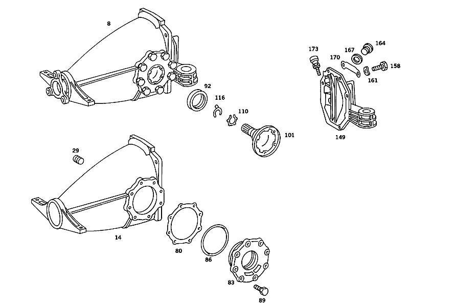

| № | Артикул | Название | Кол. | Примечание | Ограничение |
|---|---|---|---|---|---|
| 8 | A 126 350 76 03 | КАРТЕР МОСТА | - | ||
| 8 | A 126 350 14 62 | Картер моста | 1 | РЕДУКТОР ЗАДНЕГО МОСТА 1:2.47 | |
| 14 | A 126 350 40 03 | - КАРТЕР МОСТА | - | ||
| 14 | A 126 351 12 01 | - КАРТЕР МОСТА | 1 | [402] БОЛЬШЕ НЕ ПОСТАВЛЯЕТСЯ | |
| 29 | A 186 997 00 32 | - ЗАГЛУШКА РЕЗЬБОВАЯ | 1 | M24X1,5 | |
| 35 | A 126 350 20 23 | - ДИФФЕРЕНЦИАЛ | 1 | БЕЗ КОМПЛЕКТА ШЕСТЕРЕН | |
| 41 | A 109 353 22 62 | - ШАЙБА УПОРНАЯ | - | ||
| 41 | A 129 353 10 62 | - Прижимная шайба | 2 | ПО НЕОБХОДИМОСТИ 2.8 MM [003] С НАКЛАДКОЙ С ОДНОЙ СТОРОНЫ | |
| 41 | A 109 353 21 62 | - ШАЙБА УПОРНАЯ | - | ||
| 41 | A 129 353 09 62 | - Прижимная шайба | 2 | ПО НЕОБХОДИМОСТИ 2.9 MM [003] С НАКЛАДКОЙ С ОДНОЙ СТОРОНЫ | |
| 41 | A 109 353 12 62 | - ШАЙБА УПОРНАЯ | - | ||
| 41 | A 129 353 08 62 | - Прижимная шайба | 2 | ПО НЕОБХОДИМОСТИ 3 MM [003] С НАКЛАДКОЙ С ОДНОЙ СТОРОНЫ | |
| 41 | A 109 353 13 62 | - ШАЙБА УПОРНАЯ | - | ||
| 41 | A 129 353 07 62 | - Прижимная шайба | 2 | ПО НЕОБХОДИМОСТИ 3.1 MM [003] С НАКЛАДКОЙ С ОДНОЙ СТОРОНЫ | |
| 41 | A 109 353 14 62 | - ШАЙБА УПОРНАЯ | - | ||
| 41 | A 129 353 06 62 | - Прижимная шайба | 2 | ПО НЕОБХОДИМОСТИ 3.2 MM [003] С НАКЛАДКОЙ С ОДНОЙ СТОРОНЫ | |
| 41 | A 109 353 15 62 | - ШАЙБА УПОРНАЯ | - | ||
| 41 | A 129 353 05 62 | - Прижимная шайба | 2 | ПО НЕОБХОДИМОСТИ 3.3 MM [003] С НАКЛАДКОЙ С ОДНОЙ СТОРОНЫ | |
| 41 | A 109 353 16 62 | - ШАЙБА УПОРНАЯ | - | ||
| 41 | A 129 353 04 62 | - Прижимная шайба | 2 | ПО НЕОБХОДИМОСТИ 3.4 MM [003] С НАКЛАДКОЙ С ОДНОЙ СТОРОНЫ | |
| 41 | A 109 353 17 62 | - ШАЙБА УПОРНАЯ | - | ||
| 41 | A 129 353 03 62 | - Прижимная шайба | 2 | ПО НЕОБХОДИМОСТИ 3.5 MM [003] С НАКЛАДКОЙ С ОДНОЙ СТОРОНЫ | |
| 41 | A 109 353 18 62 | - ШАЙБА УПОРНАЯ | - | ||
| 41 | A 129 353 02 62 | - Прижимная шайба | 2 | ПО НЕОБХОДИМОСТИ 3.6 MM [003] С НАКЛАДКОЙ С ОДНОЙ СТОРОНЫ | |
| 41 | A 109 353 19 62 | - ШАЙБА УПОРНАЯ | - | ||
| 41 | A 129 353 01 62 | - Прижимная шайба | 2 | ПО НЕОБХОДИМОСТИ 4.0 MM [003] С НАКЛАДКОЙ С ОДНОЙ СТОРОНЫ | |
| 44 | A 112 353 06 62 | - Фрикционная шайба | 10 | БЕЗ НАКЛАДКИ | |
| 47 | A 109 353 20 62 | - ШАЙБА УПОРНАЯ | - | ||
| 47 | A 129 353 11 62 | - Прижимная шайба | 8 | С НАКЛАДКОЙ С ОБЕИХ СТОРОН | |
| 50 | A 116 353 00 15 | - ШЕСТЕРНЯ ПОЛУОСИ | - | ||
| 50 | A 140 353 08 15 | - Шестерня полуоси | 2 | ||
| 53 | A 116 353 02 14 | - ВЕДУЩ.КОН.ШЕСТЕРНЯ | - | ||
| 53 | A 140 353 05 14 | - Сателлит дифференциала | 2 | ||
| 56 | A 116 353 02 24 | - СФЕРИЧЕСКАЯ ШАЙБА | - | ||
| 56 | A 140 353 01 24 | - Сферическая шайба | 2 | ||
| 59 | A 126 353 06 21 | - БОЛТ | - | ||
| 59 | A 126 353 07 21 | - БОЛТ | - | ||
| 59 | A 126 353 08 21 | - Палец | 1 | ||
| 62 | N 001481 006008 | - Распорный штифт | 1 | ||
| 65 | A 126 350 16 39 | - РЯД ШЕСТЕРЕН | - | [002] FIRST EXHAUST STOCK OF OLD PARTS UP TO IDENT NO.A 042492 | |
| 65 | A 126 350 26 39 | - РЯД ШЕСТЕРЕН | - | ||
| 65 | A 126 350 21 39 | - РЯД ШЕСТЕРЕН | 1 | 1:2.47 | |
| 68 | A 126 353 06 85 | - Шестерня | 1 | Z=39 | |
| 71 | A 126 990 01 01 | - болт | 10 | ТАРЕЛЬЧ. ШЕСТЕРНЯ НА КОРПУСЕ ДИФФЕРЕНЦИАЛА | |
| 74 | A 000 980 19 02 | - Кон. роликоподшипник | 2 | ОПОРА ТАРЕЛЬЧ. ШЕСТЕРНИ | |
| 80 | A 116 353 14 52 | - РАСПОРНАЯ ШАЙБА | 2 | ПО НЕОБХОДИМОСТИ 0.90 MM [402] БОЛЬШЕ НЕ ПОСТАВЛЯЕТСЯ | |
| 80 | A 116 353 16 52 | - РАСПОРНАЯ ШАЙБА | 2 | ПО НЕОБХОДИМОСТИ 1.00 MM | |
| 80 | A 116 353 17 52 | - РАСПОРНАЯ ШАЙБА | 2 | ПО НЕОБХОДИМОСТИ 1.05 MM | |
| 80 | A 116 353 18 52 | - Компенсационная шайба | 2 | ПО НЕОБХОДИМОСТИ 1.10 MM | |
| 80 | A 116 353 19 52 | - РАСПОРНАЯ ШАЙБА | 2 | ПО НЕОБХОДИМОСТИ 1.15 MM | |
| 80 | A 116 353 38 52 | - РАСПОРНАЯ ШАЙБА | 2 | ПО НЕОБХОДИМОСТИ 1.20 MM | |
| 80 | A 116 353 39 52 | - РАСПОРНАЯ ШАЙБА | 2 | ПО НЕОБХОДИМОСТИ 1.30 MM | |
| 80 | A 116 353 40 52 | - Компенсационная шайба | 2 | ПО НЕОБХОДИМОСТИ 1.40 MM | |
| 80 | A 116 353 41 52 | - РАСПОРНАЯ ШАЙБА | 2 | ПО НЕОБХОДИМОСТИ 1.45 MM | |
| 80 | A 116 353 42 52 | - Компенсационная шайба | 2 | ПО НЕОБХОДИМОСТИ 1.50 MM | |
| 80 | A 116 353 43 52 | - РАСПОРНАЯ ШАЙБА | 2 | ПО НЕОБХОДИМОСТИ 1.55 MM | |
| 80 | A 116 353 44 52 | - Дистанционная шайба | 2 | ПО НЕОБХОДИМОСТИ 1.60 MM | |
| 80 | A 116 353 45 52 | - РАСПОРНАЯ ШАЙБА | 2 | ПО НЕОБХОДИМОСТИ 1.70 MM | |
| 80 | A 116 353 46 52 | - Дистанционная шайба | 2 | ПО НЕОБХОДИМОСТИ 1.80 MM | |
| 80 | A 116 353 47 52 | - РАСПОРНАЯ ШАЙБА | 2 | ПО НЕОБХОДИМОСТИ 1.90 MM | |
| 80 | A 116 353 48 52 | - Дистанционная шайба | 2 | ПО НЕОБХОДИМОСТИ 2.00 MM | |
| 80 | A 116 353 49 52 | - РАСПОРНАЯ ШАЙБА | 2 | ПО НЕОБХОДИМОСТИ 2.10 MM | |
| 80 | A 116 353 50 52 | - Дистанционная шайба | 2 | ПО НЕОБХОДИМОСТИ 2.20 MM | |
| 80 | A 116 353 51 52 | - РАСПОРНАЯ ШАЙБА | 2 | ПО НЕОБХОДИМОСТИ 2.30 MM | |
| 80 | A 116 353 52 52 | - РАСПОРНАЯ ШАЙБА | 2 | ПО НЕОБХОДИМОСТИ 2.40 MM | |
| 80 | A 116 353 53 52 | - Дистанционная шайба | 2 | ПО НЕОБХОДИМОСТИ 2.50 MM | |
| 80 | A 116 353 54 52 | - РАСПОРНАЯ ШАЙБА | 2 | ПО НЕОБХОДИМОСТИ 2.60 MM | |
| 83 | A 126 353 01 06 | - КРЫШКА | 2 | КРЫШКА ПОДШИПНИКА | |
| 86 | A 003 997 25 48 | - Уплотнительное кольцо | 2 | ||
| 89 | N 000933 008114 | - Винт | - | M8X22\-8.8 | |
| 89 | N 304017 008021 | - Винт с 6-гранной головкой | 16 | КРЫШКА НА КОРПУСЕ МОСТА; M8X20 | |
| 92 | A 014 997 62 47 | - УПЛОТНИТ. КОЛЬЦО | - | ||
| 92 | A 020 997 25 47 | - Уплотнительное кольцо | 2 | ПОЛУОСЬ | |
| 101 | A 126 350 04 45 | - ФЛАНЕЦ | - | [004] FIRST EXHAUST STOCK OF OLD PARTS UP TO IDENT NO.A 099505 | |
| 101 | A 126 350 18 45 | - Фланец | 2 | ВНУТР. | |
| 101 | A 126 350 18 45 | - Фланец | 2 | ВНУТР. | |
| 110 | A 115 357 76 52 | - РАСПОРНАЯ ШАЙБА | 2 | ПО НЕОБХОДИМОСТИ 2.6 MM | |
| 110 | A 115 357 75 52 | - РАСПОРНАЯ ШАЙБА | 2 | ПО НЕОБХОДИМОСТИ 2.7 MM | |
| 110 | A 115 357 74 52 | - РАСПОРНАЯ ШАЙБА | 2 | ПО НЕОБХОДИМОСТИ 2.8 MM [402] БОЛЬШЕ НЕ ПОСТАВЛЯЕТСЯ | |
| 110 | A 115 357 64 52 | - Диск | 2 | ПО НЕОБХОДИМОСТИ 2.9 MM | |
| 110 | A 115 357 62 52 | - РАСПОРНАЯ ШАЙБА | 5 | ПО НЕОБХОДИМОСТИ 3.0 MM [402] БОЛЬШЕ НЕ ПОСТАВЛЯЕТСЯ | |
| 110 | A 115 357 60 52 | - Диск | 2 | ПО НЕОБХОДИМОСТИ 3.1 MM | |
| 110 | A 115 357 58 52 | - Диск | 2 | ПО НЕОБХОДИМОСТИ 3.2 MM | |
| 110 | A 115 357 56 52 | - Диск | 2 | ПО НЕОБХОДИМОСТИ 3.3 MM | |
| 110 | A 115 357 54 52 | - Диск | 2 | ПО НЕОБХОДИМОСТИ 3.4 MM | |
| 116 | A 115 994 04 34 | - Пруж. стопорное кольцо | 2 | AXLE SHAFT TO AXLE HOUSING | |
| 119 | A 116 353 11 52 | - РАСПОРНАЯ ШАЙБА | 1 | ПО НЕОБХОДИМОСТИ 1.50 MM | |
| 119 | A 116 353 20 52 | - РАСПОРНАЯ ШАЙБА | 1 | ПО НЕОБХОДИМОСТИ 1.55 MM | |
| 119 | A 116 353 21 52 | - Компенсационная шайба | 1 | ПО НЕОБХОДИМОСТИ 1.60 MM | |
| 119 | A 116 353 22 52 | - РАСПОРНАЯ ШАЙБА | 1 | ПО НЕОБХОДИМОСТИ 1.65 MM [402] БОЛЬШЕ НЕ ПОСТАВЛЯЕТСЯ | |
| 119 | A 116 353 23 52 | - Компенсационная шайба | 1 | ПО НЕОБХОДИМОСТИ 1.70 MM | |
| 119 | A 116 353 24 52 | - РАСПОРНАЯ ШАЙБА | 1 | ПО НЕОБХОДИМОСТИ 1.75 MM | |
| 119 | A 116 353 25 52 | - Компенсационная шайба | 1 | ПО НЕОБХОДИМОСТИ 1.80 MM | |
| 119 | A 116 353 26 52 | - РАСПОРНАЯ ШАЙБА | 1 | ПО НЕОБХОДИМОСТИ 1.85 MM | |
| 119 | A 116 353 27 52 | - Компенсационная шайба | 1 | ПО НЕОБХОДИМОСТИ 1.90 MM | |
| 119 | A 116 353 28 52 | - РАСПОРНАЯ ШАЙБА | 1 | ПО НЕОБХОДИМОСТИ 1.95 MM | |
| 119 | A 116 353 29 52 | - Компенсационная шайба | 1 | ПО НЕОБХОДИМОСТИ 2.00 MM | |
| 119 | A 116 353 30 52 | - Дистанционная шайба | 1 | ПО НЕОБХОДИМОСТИ 2.05 MM | |
| 119 | A 116 353 31 52 | - РАСПОРНАЯ ШАЙБА | 1 | ПО НЕОБХОДИМОСТИ 2.10 MM [402] БОЛЬШЕ НЕ ПОСТАВЛЯЕТСЯ | |
| 119 | A 116 353 32 52 | - Дистанционная шайба | 1 | ПО НЕОБХОДИМОСТИ 2.15 MM | |
| 119 | A 116 353 33 52 | - Компенсационная шайба | 1 | ПО НЕОБХОДИМОСТИ 2.20 MM | |
| 119 | A 116 353 34 52 | - РАСПОРНАЯ ШАЙБА | 1 | ПО НЕОБХОДИМОСТИ 2.25 MM | |
| 119 | A 116 353 35 52 | - РАСПОРНАЯ ШАЙБА | 1 | ПО НЕОБХОДИМОСТИ 2.30 MM | |
| 119 | A 116 353 36 52 | - РАСПОРНАЯ ШАЙБА | 1 | ПО НЕОБХОДИМОСТИ 2.35 MM | |
| 119 | A 116 353 37 52 | - Компенсационная шайба | 1 | ПО НЕОБХОДИМОСТИ 2.40 MM | |
| 122 | A 000 980 84 02 | - Конический подшипник | 1 | ПОДШИПНИК ПРИВОДНОЙ КОНИЧЕСКОЙ ШЕСТЕРНИ | |
| 125 | A 108 353 00 42 | - Распорная втулка | 1 | ||
| 128 | A 109 353 10 62 | - Фрикционная шайба | 2 | ||
| 131 | A 000 980 33 02 | - КОНИЧ. РОЛИКОПОДШИПНИК | - | ||
| 131 | A 002 980 11 02 | - Кон. роликоподшипник | 1 | ПОДШИПНИК ПРИВОДНОЙ КОНИЧЕСКОЙ ШЕСТЕРНИ | |
| 137 | A 002 997 21 47 | - УПЛОТНИТ. КОЛЬЦО | - | ||
| 137 | A 014 997 49 47 | - УПЛОТНИТ. КОЛЬЦО | - | ||
| 137 | A 020 997 21 47 | - УПЛОТНИТ. КОЛЬЦО | - | ||
| 137 | A 022 997 99 47 | - Уплотнительное кольцо | 1 | ПРИВОДН. КОНИЧ. ШЕСТЕРНЯ | |
| 140 | A 116 350 02 45 | - ФЛАНЕЦ | - | ||
| 140 | A 126 350 14 45 | - Фланец | 1 | ФЛАНЕЦ ШАРНИРА 110mm | |
| 143 | A 123 353 00 72 | - гайка | 1 | M26X1.5 | |
| 149 | A 126 351 09 08 | - Крышка | 1 | КОНЦЕВАЯ КРЫШКА | |
| 149 | A 126 351 10 08 | - КРЫШКА | - | ||
| 149 | A 126 351 09 08 | - Крышка | 1 | ||
| 158 | N 070614 010011 | - Винт | 8 | КРЫШКА НА КОРПУСЕ МОСТА | |
| 161 | N 000137 010205 | - Пружинная шайба | 8 | КРЫШКА НА КОРПУСЕ МОСТА | |
| 164 | A 094 997 24 00 | - Резьбовая пробка | - | ||
| 164 | A 210 997 01 32 | - Резьбовая пробка | 1 | ||
| 167 | N 007603 024105 | - Уплотнительное кольцо | 1 | ||
| 170 | A 124 584 90 21 | ТАБЛИЧКА С УКАЗАНИЯМИ | - | ||
| 170 | A 124 584 58 17 | Информационная табличка | 1 | ДИФФЕРЕНЦИАЛ С БЛОКИРОВКОЙ | |
| 173 | A 126 350 00 90 | Воздушный клапан | 1 | [402] БОЛЬШЕ НЕ ПОСТАВЛЯЕТСЯ |
Позиций: 128 · подписано на схемах: 128 · колесо — плавный зум в курсор, перетаскивание — пан, двойной клик — зум, клик по артикулу — скопировать.